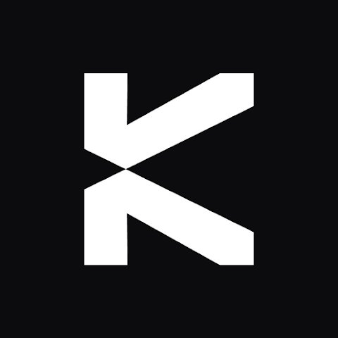

Bonus KAST 20$–250$
Carta Visa che spende stablecoin. Il bonus cresce con quanto spendi: 20$ su 100$, 50$ su 600$, 100$ su 1.600$, 250$ su 6.600$, pagati in USDC. Serve un deposito da almeno 105€ e la spesa base va fatta entro 7 giorni dalla registrazione.
Come ottenere il bonus KAST: procedura passo-passo
- Registrati dal link dedicato. Disattiva prima adblock ed eventuali antivirus e accetta i cookie: se il tracciamento non passa, l'invito non viene agganciato e il bonus non viene riconosciuto.
- Inserisci l'email, poi scarica l'app e accedi con la stessa email. Non rifare la registrazione dall'app: creeresti un secondo account senza invito.
- Completa la verifica identità (KYC) con scansione del documento e selfie. Vanno bene carta d'identità, passaporto o patente.
- Deposita almeno 105€. In crypto è immediato. Per il bonifico in euro devi prima attivare il conto e compilare un breve questionario.
- Genera la carta virtuale gratuita.
- Se paghi con bonifico, KAST ti dà un IBAN con nazione Malta e beneficiario il tuo nome e cognome: va impostato come bonifico a persona e non ad azienda, partendo da un conto intestato a te.
- Con la carta fai acquisti per almeno 100$ entro 7 giorni dalla registrazione: è la soglia del bonus base da 20$, ed è la scadenza più stretta di tutta la promo.
- Il bonus ti viene notificato subito, ma diventa disponibile e prelevabile dopo 14 giorni. Se spendi di più, sali di scaglione: 50$ su 600$ spesi, 100$ su 1.600$, 250$ su 6.600$.
✅ Buono a sapersi
- Valgono gli acquisti reali, nei negozi fisici e online: supermercato, bar, ristorante, benzina, farmacia, e-commerce.
- La carta virtuale è gratuita e si aggancia ad Apple Pay e Google Pay.
- Sul piano gratuito c'è un cashback dell'1,5% sugli acquisti, fino a 2.000 dollari di spesa al mese.
- Gli inviti sono illimitati e seguono la stessa scala del bonus di benvenuto.
- Il deposito resta tuo: non lo stai spendendo, lo stai caricando sulla carta.
⚠️ Dove si perde il bonus
- KAST non è una banca. È una fintech con sede a Singapore che si definisce società tecnologica appoggiata a istituti autorizzati, e non risulta pubblicamente un'autorizzazione europea propria — a differenza di Bitstack, che ha la licenza MiCA dell'AMF, o di Bybit EU, autorizzata dalla FMA austriaca. Lo scriviamo perché è la differenza che conta quando scegli dove mettere i soldi.
- La carta è custodial: i soldi che depositi stanno in mano a KAST, non su un wallet tuo. Non tenerci più di quello che ti serve per spendere.
- Il bonifico verso Malta intestato a te stesso è una configurazione che può far scattare i controlli antiriciclaggio della banca da cui parte. Se la tua banca ti chiede chiarimenti, è normale: mettilo in conto o usa il deposito in crypto.
- Non contano ricariche tra conti, ricariche PayPal, ricariche di altri wallet e giri di denaro: KAST le considera operazioni costruite per simulare una spesa e può negare il bonus o bloccare la ricompensa.
- I 7 giorni per la spesa base partono dalla registrazione, non dal deposito. Registrati quando sei pronto a usare la carta, non prima.
💡 Qui la scorciatoia dei voucher non conviene
Su altre promo, tipo ING, si arriva alla soglia di spesa comprando voucher Aircash o MuchBetter e riportandosi poi i soldi sul conto. Su KAST l'operazione è tecnicamente possibile ma il quadro è diverso: il regolamento nomina esplicitamente ricariche di wallet e giri di denaro fra le operazioni che possono far saltare il bonus, mentre l'acquisto di gift card resta una via di mezzo che potrebbe passare.
Qui non è zona grigia per silenzio del regolamento, è zona grigia contro un divieto scritto. Con 100$ di soglia e sette giorni di tempo, spendere davvero al supermercato o online costa meno del rischio di perdere il bonus o di vedersi bloccare la ricompensa.
Perché KAST
È l'unico modo semplice per spendere stablecoin nei negozi di tutti i giorni, e il bonus sale insieme alla spesa invece di fermarsi a una cifra fissa.
👍 Pregi
- Il bonus cresce con la spesa, fino a 250$
- Carta virtuale gratuita su Apple e Google Pay
- 1,5% di cashback sul piano gratuito
- Inviti illimitati
Il bonus è erogato direttamente da KAST. GoatLink non chiede alcun pagamento.
Domande frequenti sul bonus KAST
Quanto vale il bonus KAST?
Quanto devo depositare?
Entro quando devo fare la spesa?
Quando posso prelevare il bonus?
KAST è regolamentata in Europa?
I miei soldi dove stanno?
Perché il bonifico va fatto a una persona e non a un'azienda?
Che cashback ha la carta?
Ultimo aggiornamento: